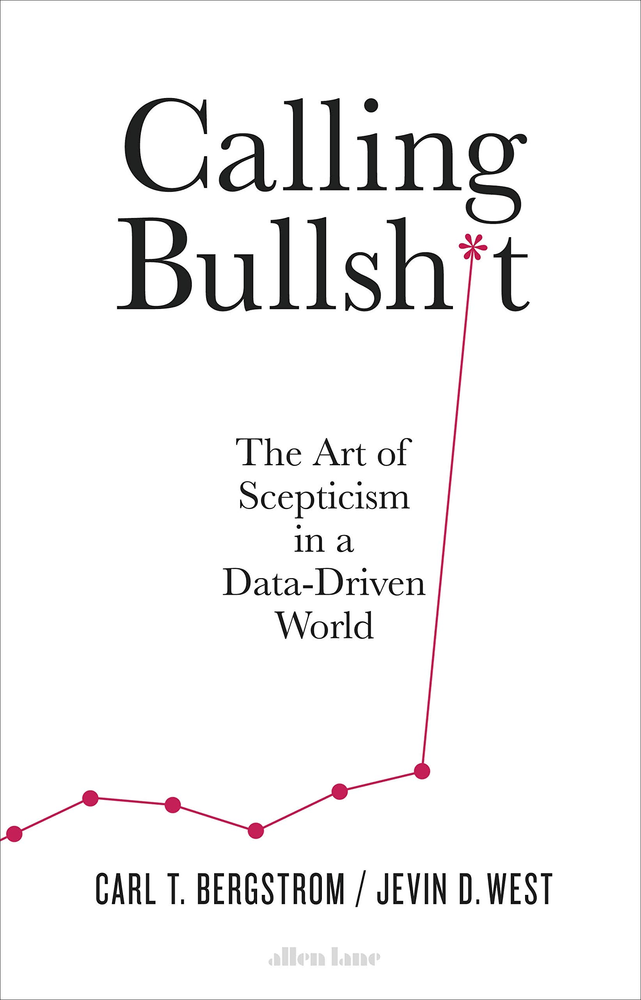
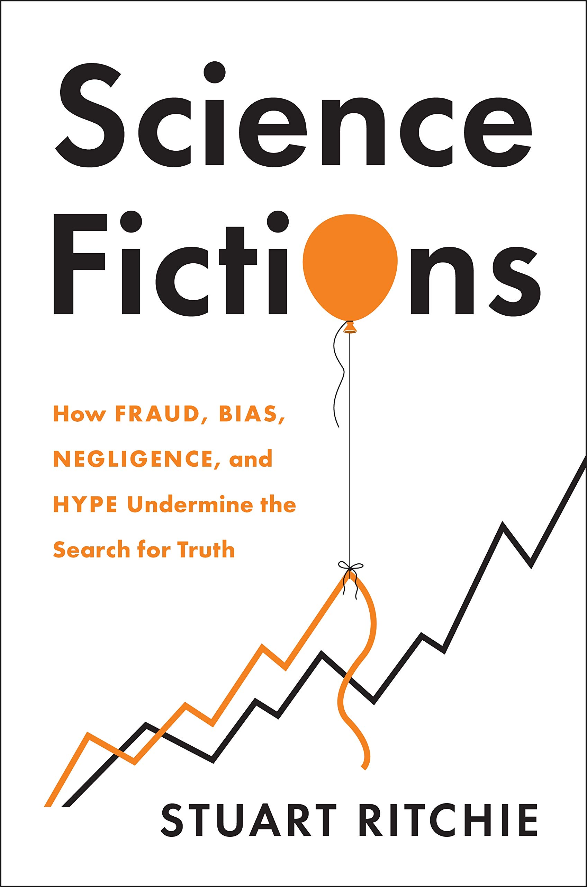

Technology, Innovation, Business, and Society (TIBS) Coursework
In this unit coursework, I have written a comparative review of the following books:
- - J. West & C. Bergstorm (2020) Calling Bullshit: The Art of Scepticism in a Data-Driven World. pp.352.
- - S. Ritchie (2020) Science Fictions: How Fraud, Bias, Negligence, and Hype Undermine the Search for Truth. pp.368.
My writing review was around 2600 words where I discussed, compared and contrasted the authors' ideas in these pair of books.
J. West & C. Bergstorm (2020) Calling Bullshit: The Art of Scepticism in a Data-Driven World.

S. Ritchie (2020) Science Fictions: How Fraud, Bias, Negligence, and Hype Undermine the Search for Truth.

Read Sample Review
Read A Sample of Review Document in PDF Format